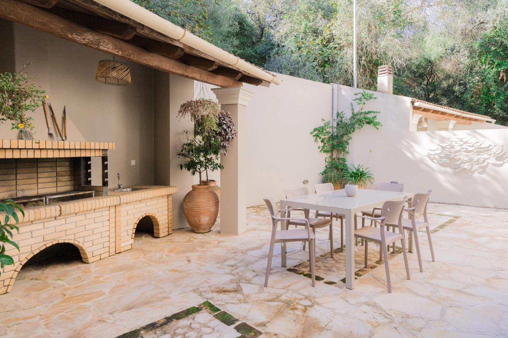

Copyable outreach
Professional message for introducing the Villa Leveque website concept.
Subject
Hi, I’ve prepared a premium image-led website concept for Villa Leveque, focused on showcasing the villa, private pool, bedrooms, outdoor dining, services and location in Kassiopi, Corfu. The aim is to give Villa Leveque the feel of a boutique luxury villa brand, with a clear direct enquiry journey for guests checking availability. The concept includes a cinematic homepage, dedicated villa page, immersive gallery, services, location page and polished contact/enquiry form. You can view the concept here: /businesses/villa-leveque/ If useful, I can refine the final copy, add confirmed contact details and prepare the enquiry flow for launch. Best, ShaneView Website Concept